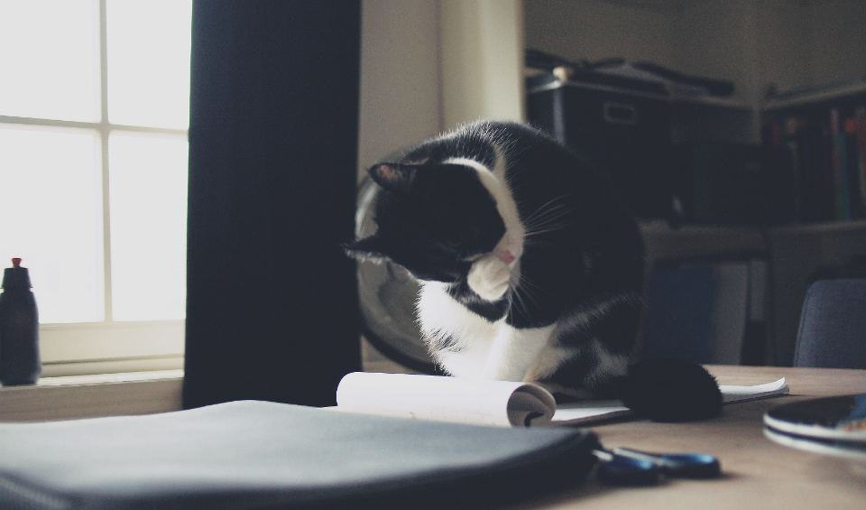
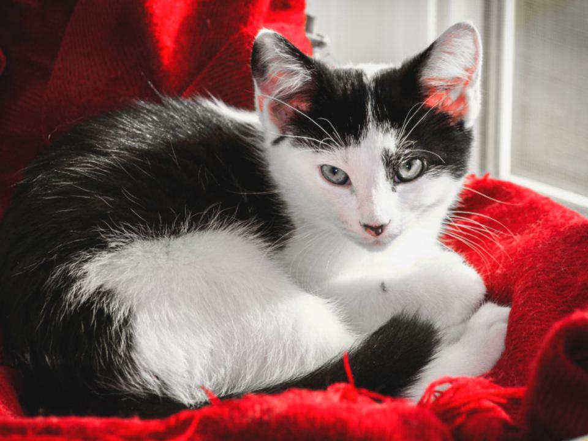
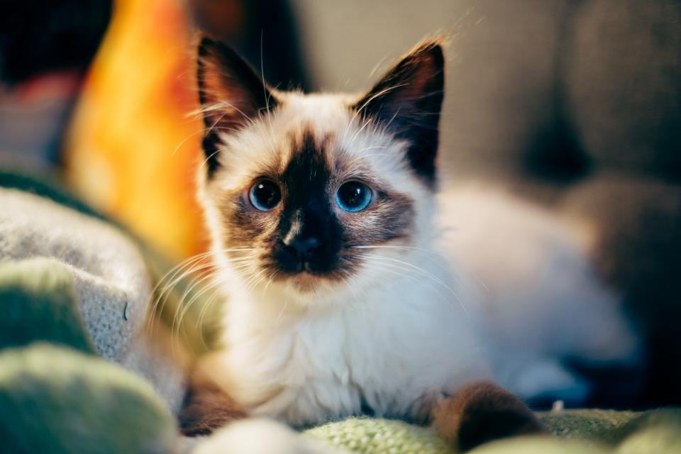
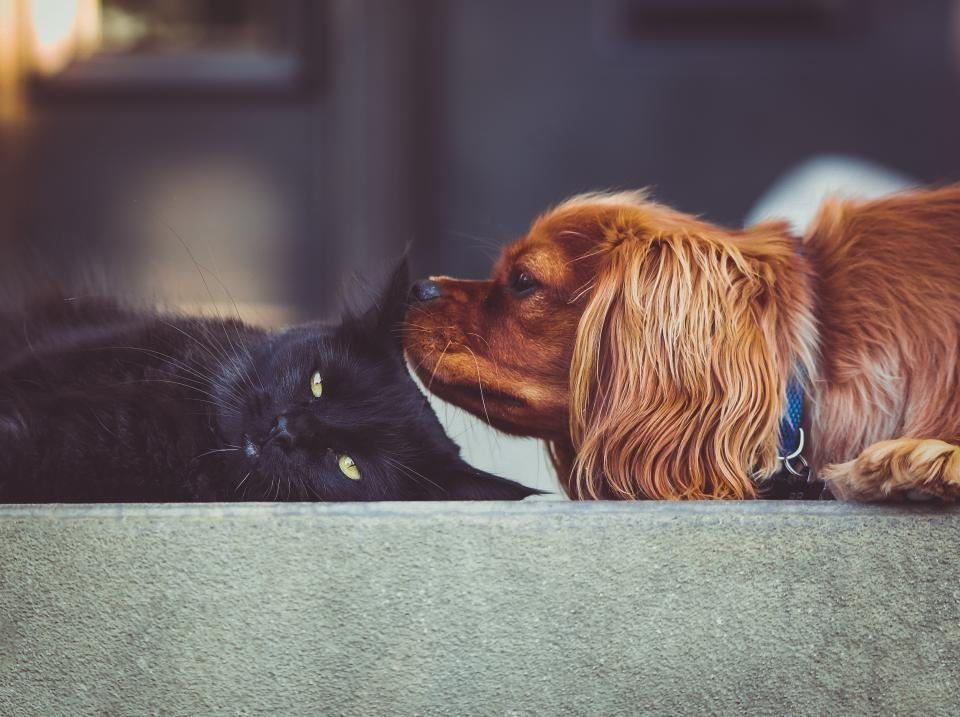
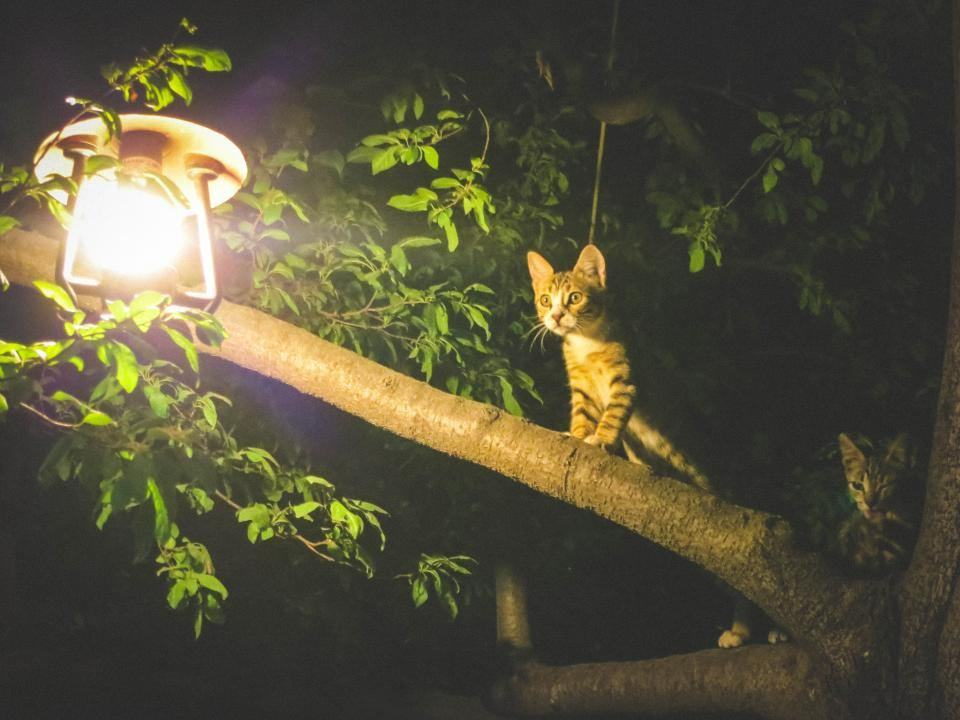
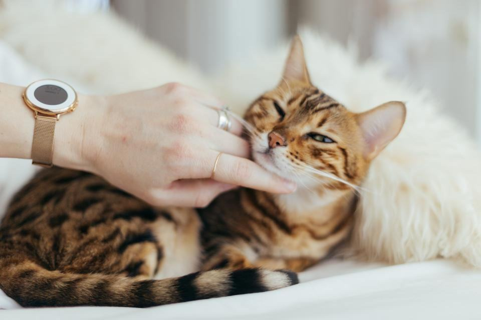
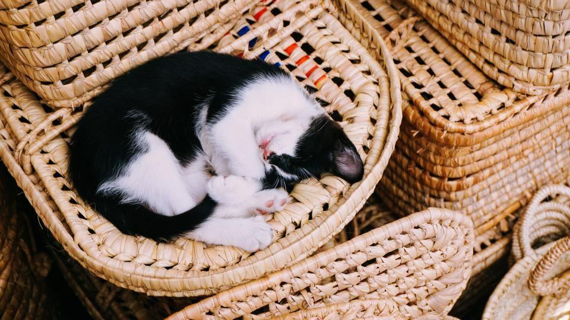

En salong för det mest kräsna djuret
Kattägare om sina besök
Birgitta L. · Linköping”Veterinären ville söva Smulan för att få bort filten. Hanna gjorde det på två besök utan narkos, och Smulan var inte ens sur efteråt.”
Jonas P. · Norrköping”Thor är nio kilo och hatar att bli lyft. Linnea pratade med honom hela tiden och han låg still i fyrtio minuter.”
Sofie A. · Mjölby”Äntligen en salong som inte luktar hund. Mira gick själv ut ur buren.”
Vad behöver katten hjälp med?


Så går ett kattbesök till
- 1

Tyst ankomst
Katten bärs direkt in i behandlingsrummet och får sitta kvar i buren med öppen lucka i fem minuter.
- 2

Hälsokoll
Vi känner igenom huden och kollar öron, klor och tänder innan vi börjar.
- 3

Korta pass
Vi arbetar i pass på högst femton minuter och låter katten vila i buren däremellan.
- 4

Hem med rapport
Du får en skriftlig rapport om pälsen, huden och när nästa besök bör vara.
Pris efter pälslängd
Korthår
Utkamning, bad vid behov och kloklipp.
fr. 495 krper katt- Utkamning av underull
- Kloklipp
- Rengöring av öron
- Skriftlig pälsrapport
- Populärast
Långhår
För perser, maine coon och andra långhåriga.
fr. 895 krper katt- Bad och lågljudsfön
- Avfällning eller putsning
- Sanitärklipp och tassar
- Kloklipp och pälsrapport
Lejonklipp
Kortklippt kropp med kvar man och svanstofs.
fr. 1 295 krper katt- Klippning med 5 mm kam
- Bad före klippning
- Kvar man, tassar och svanstofs
- Uppföljningssamtal dagen efter
Priserna gäller päls utan filt. Avfiltning debiteras per påbörjad kvart.
Nyklippta katter







Illustrationsbilder
Boka kattens tid
Berätta kattens namn, ras, ålder och hur pälsen ser ut, så föreslår vi en förmiddagstid.
- Telefon
- 070-174 06 46
- E-post
- mjau@morrhar.se
- Öppettider
- Mån–fre 8–16, drop in-kloklipp ons 16–18